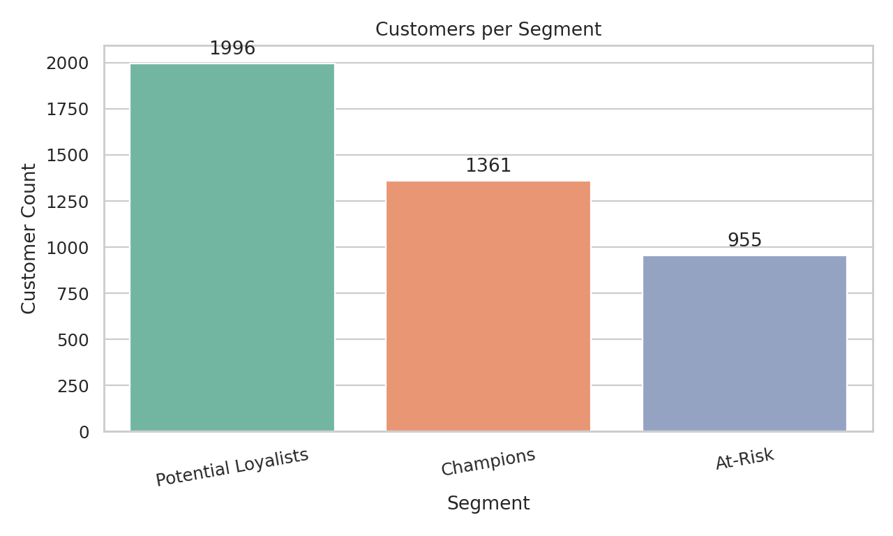
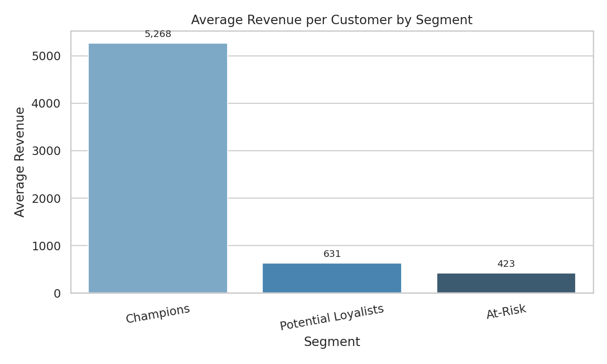
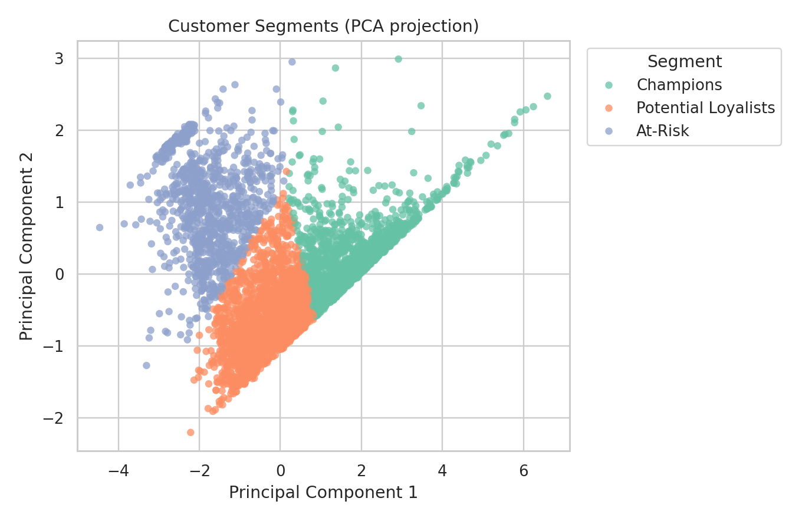

Online Retail II Customer Segmentation
Unsupervised clustering (RFM) for marketing actionability
Raw Transactions
525,461
After Cleaning
407,664
Customers
4,312
Final Clusters
3
RFMKMeansGMM ComparisonPCA
Approach
- Clean transactions: remove missing customer IDs, cancellations, and non-positive values.
- Create customer-level features: Recency, Frequency, Monetary.
- Apply log transform to Frequency and Monetary to reduce skew.
- Scale features, test multiple k values, and select by silhouette + interpretability.
- Assign business-friendly segment names and recommendations.
Model Selection
KMeans with k=3 achieved the strongest baseline separation.
- KMeans silhouette: 0.4117
- GMM used as comparison model (check notebook output for latest score)
Why k=3: balanced cluster quality and easy stakeholder interpretation.
Segment Definitions
Champions
Low recency, highest frequency, highest spend.
Potential Loyalists
Moderate recency and value; good conversion upside.
At-Risk
Long inactive window with low activity and lower spend.
Actions
Retention for Champions, upsell for Potential Loyalists, win-back for At-Risk.
Results Visualization
Customers per Segment

Avg Revenue by Segment

PCA Projection

Two-dimensional projection used for communication, not for model training.
Deliverables and Deployment
- Notebook:
notebooks/01_customer_segmentation_starter.ipynb - Data output:
data/processed/customer_segments.csv - Report:
reports/customer_segmentation_report.html - Deploy site:
bash scripts/deploy_report.shthen opendocs/index.html
Project status: baseline complete and presentation-ready.
1 / 7